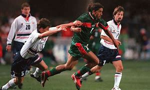

Le Maroc 1998
Lors de la Coupe du Monde 1998 de football en France, le Maroc faisait partie des équipes participantes, engagées dans une série de matches lors de cet événement sportif majeur. Le Maroc a été placé dans le groupe C aux côtés de l'Espagne, du Brésil et du Nigeria. Sa participation à ce tournoi portait de grandes ambitions, mais malgré des performances prometteuses, l'équipe n'a pas réussi à se qualifier pour la phase suivante. Au cours de la phase de groupes, le Maroc a disputé trois matchs. Le premier s'est soldé par un match nul 2-2 contre le Nigeria, suivi d'une défaite 3-0 contre le Brésil, et enfin un match nul 2-2 contre l'Espagne. En conséquence, le Maroc a terminé à la troisième place de son groupe, ne se qualifiant pas pour les phases éliminatoires. Bien que n'ayant pas atteint la qualification, la participation du Maroc à la Coupe du Monde 1998 a offert l'occasion de mettre en avant les talents des joueurs marocains et de renforcer les liens sportifs à l'échelle mondiale. Cette compétition a également démontré la capacité de l'équipe nationale marocaine à rivaliser au plus haut niveau international.
